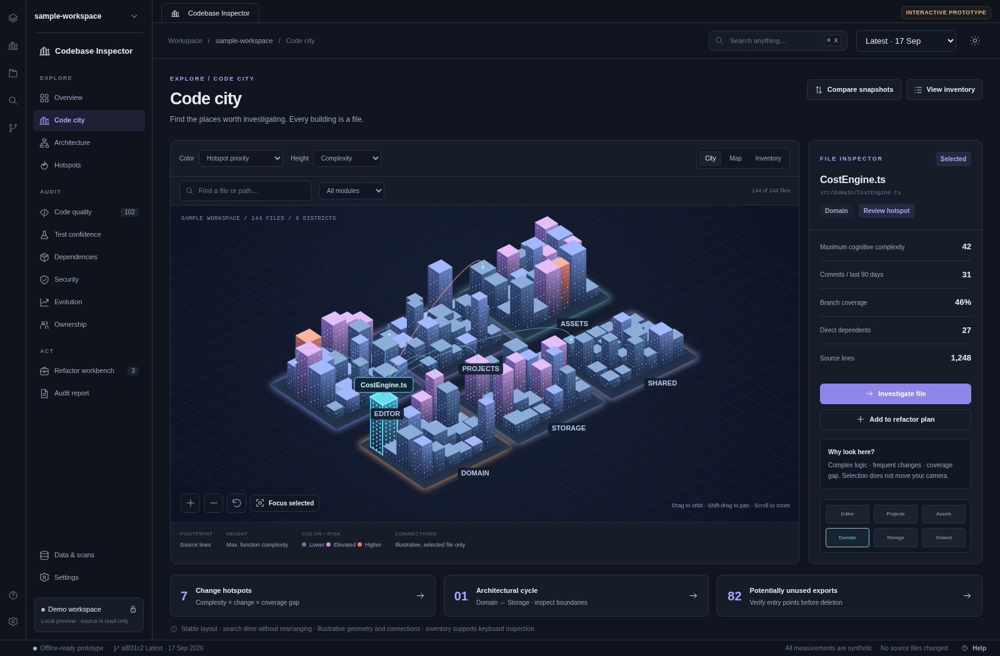Explore01 / Code cityBuild a spatial mental model and select the next file to investigate.Open interactive screen →View screenshot
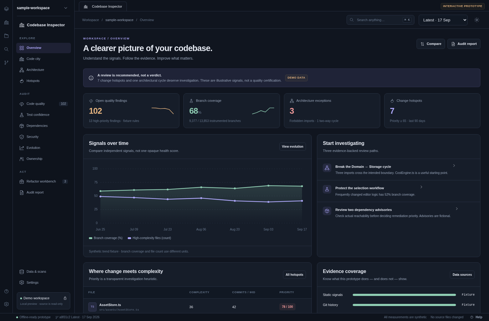Explore02 / OverviewUnderstand independent health signals and decide where to inspect next.Open interactive screen →View screenshot
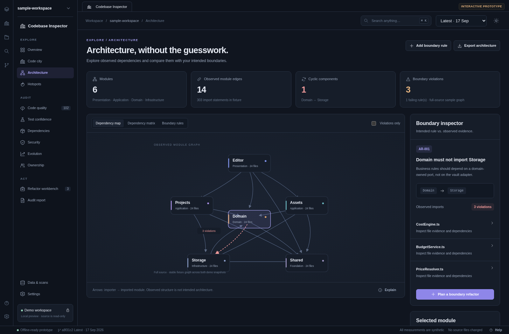Explore03 / ArchitectureCompare observed dependencies with explicitly intended boundaries.Open interactive screen →View screenshot
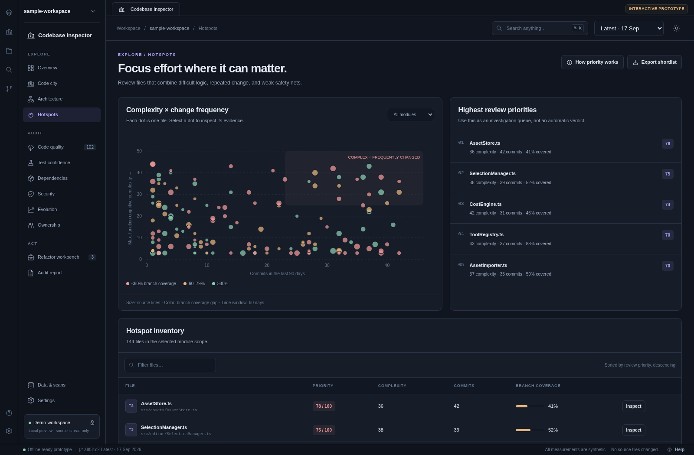Explore04 / HotspotsPrioritize investigation using transparent raw measurements.Open interactive screen →View screenshot
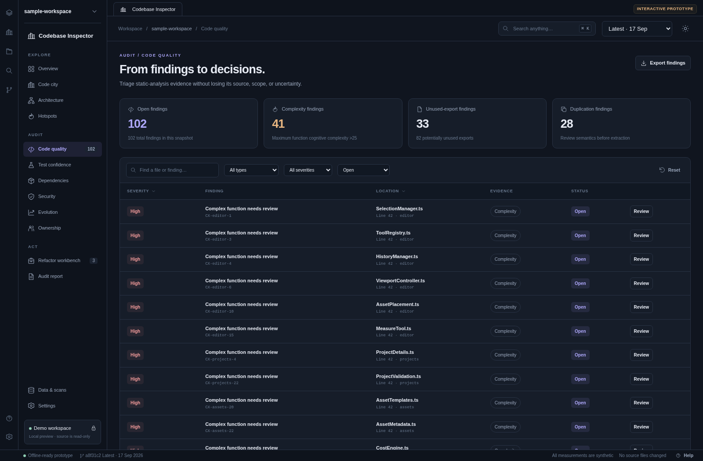Audit05 / Code qualityTriage static findings with evidence, location, and a recorded disposition.Open interactive screen →View screenshot
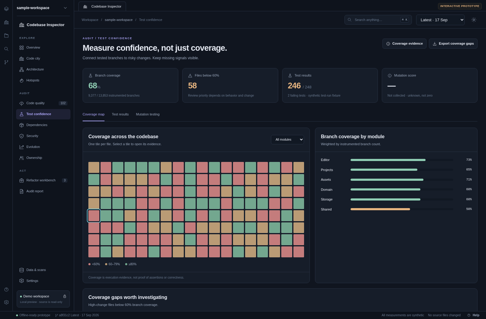Audit06 / Test confidenceAssess where tested execution is missing and keep assertion strength distinct from coverage.Open interactive screen →View screenshot
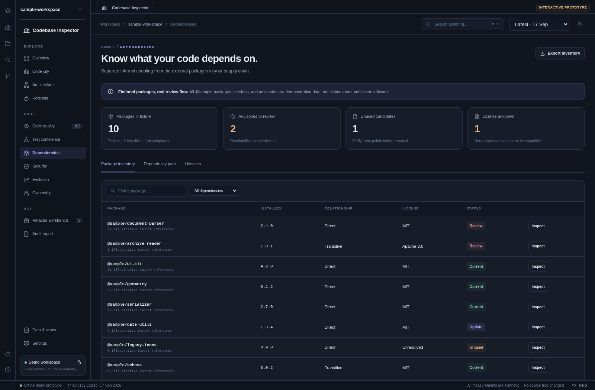Audit07 / DependenciesInspect external package inventory separately from internal module architecture.Open interactive screen →View screenshot
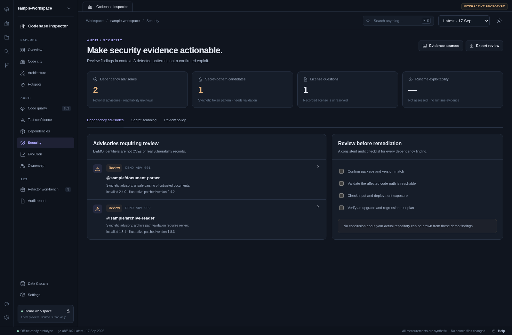Audit08 / SecurityReview possible issues without presenting an unverified exploitability verdict.Open interactive screen →View screenshot
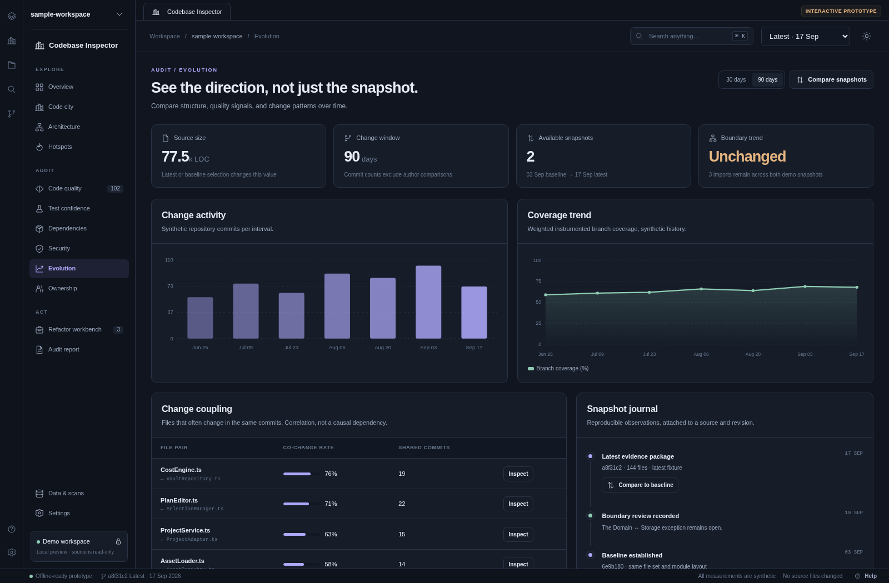Audit09 / EvolutionUnderstand trends and change relationships rather than judging one snapshot.Open interactive screen →View screenshot
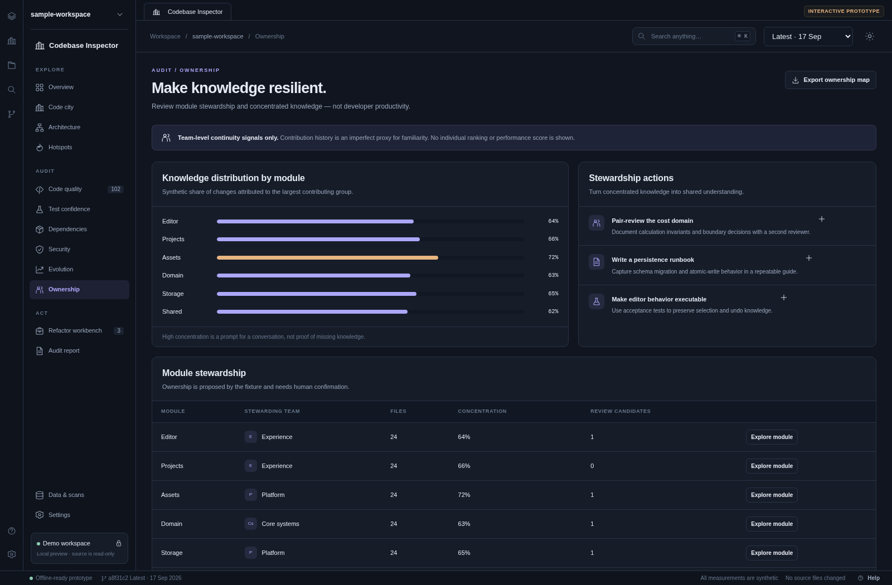Audit10 / OwnershipPlan continuity and knowledge sharing at module/team level.Open interactive screen →View screenshot
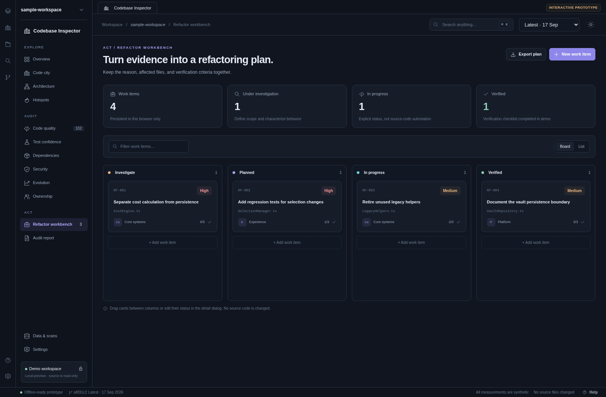Act11 / Refactor workbenchConvert evidence into scoped, verifiable improvement work.Open interactive screen →View screenshot
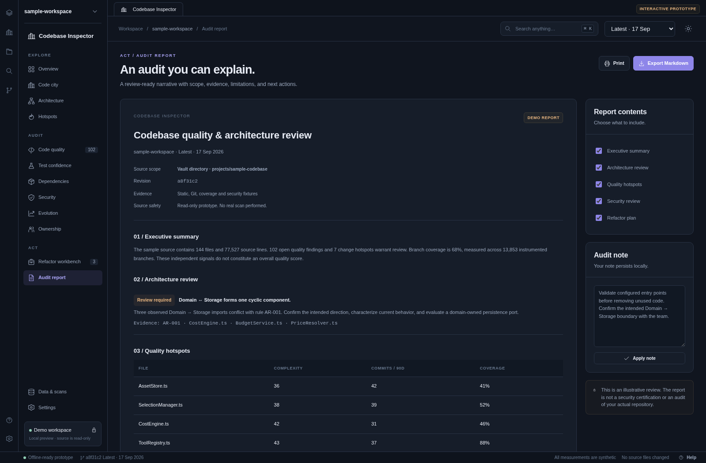Act12 / Audit reportCommunicate scope, evidence, limitations and proposed work clearly.Open interactive screen →View screenshot
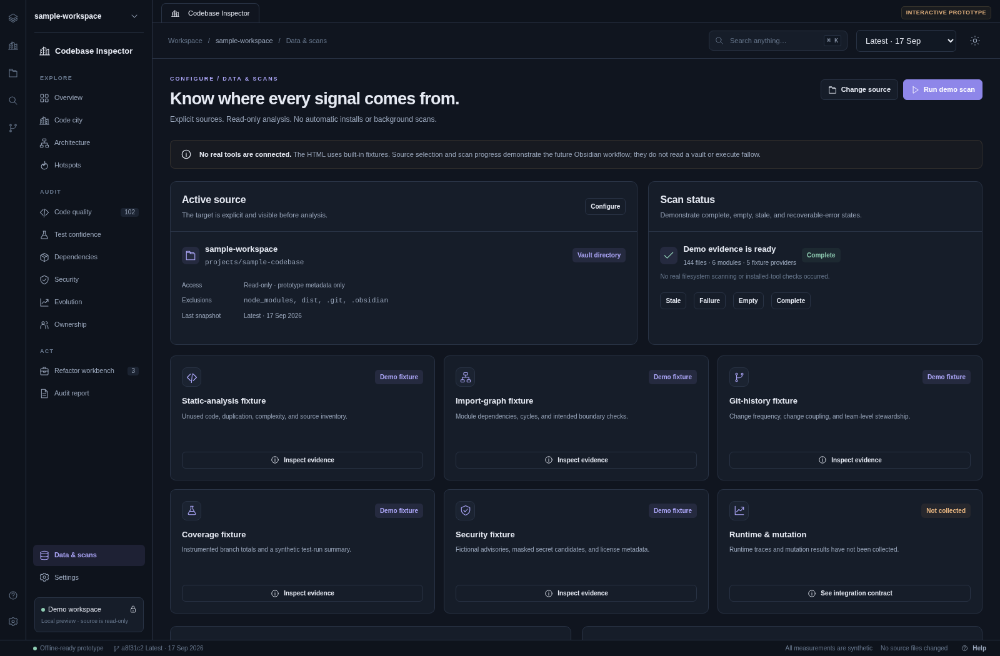Configure13 / Data & scansMake source scope and provider provenance explicit before interpretation.Open interactive screen →View screenshot
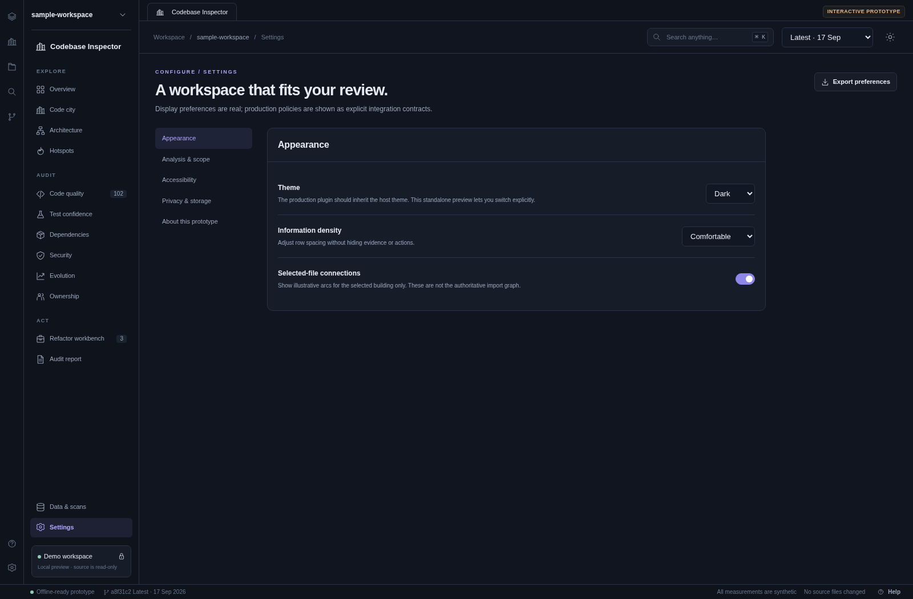Configure14 / SettingsAdjust real preview preferences while keeping production policies explicit.Open interactive screen →View screenshot
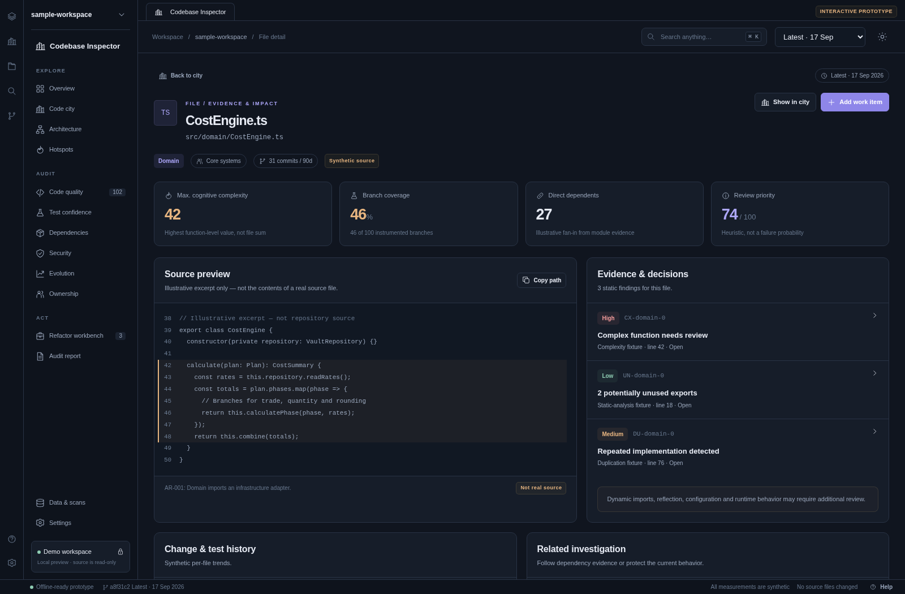Cross-cutting15 / File detailFollow a selected file from metrics to source context, evidence and planned changes.Open interactive screen →View screenshot